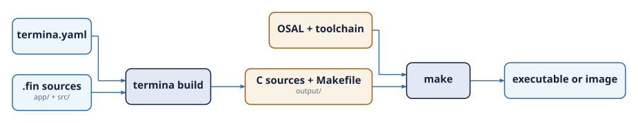

Project Structure and Build System¶
A Termina program is organized as a project: a directory with a fixed layout, a manifest that describes the project, and the source modules that make up the program. This chapter describes that layout, the manifest, and the commands that turn the sources into a running program and into a deliverable.
Creating a project¶
A project is created with the new command, which takes the name of the
project and, optionally, the target platform of the application with -p or
--platform. When no platform is given, the project is created for
posix-gcc, the development platform:
The command generates the project directory with its initial structure:
The command also initializes a Git repository in the new directory, unless the
directory already lies inside one, and writes a .gitignore that excludes the
output/ and .termina/ directories, whose contents the transpiler generates
again on every build. The option --vcs none skips the repository, although
the .gitignore is still written. The option --vscode adds the files that
Visual Studio Code needs to work on the project inside the Termina development
container: .devcontainer/devcontainer.json, which names the container image
of the same MAJOR.MINOR version as the transpiler, .vscode/tasks.json, with
a termina: build task, and .vscode/launch.json, with a debug configuration
of type termina that the Termina extension resolves for the platform of the
application.
A project is either an application or a library. An application has an
app/ directory with the application module, app.fin, where the system is
assembled, and is built into a program. A library has no app/ directory: it
publishes source modules for other projects to import, and the programs built
from it are its tests. The option --lib creates a library, and
--exports gives the module prefix it publishes, whose directory is created
under src/:
The chapter on packages and dependencies describes how a library is published and how a project depends on it.
The project layout¶
The layout of a project is fixed, so the transpiler, the editor and any other tool find every part of a project without reading its configuration:
my_project/
├── termina.yaml the manifest
├── termina.lock the resolved dependencies, if any
├── app/
│ └── app.fin the application module (applications only)
├── src/ the source modules
├── extern/ the C code that the program calls, if any
├── tests/
│ └── <name>/
│ ├── test.fin the main module of the test
│ └── src/ the modules of the test, if any
├── vendor/ a copy of every dependency, if any
├── output/ the generated C and the compiled programs
└── .termina/ working files of the transpiler
The app/ directory contains app.fin and nothing else. The src directory
holds the source modules that define the component classes and functions of
the program, organized in subdirectories whose structure mirrors the dotted
paths used in import declarations. A module at src/resources/counter.fin is
imported as resources.counter, and one at src/common/types.fin as
common.types. A module always belongs to a subdirectory, since the root of
src holds directories and not modules. Every directory and file name under
src is written in lowercase snake_case, the convention of module names,
which also rules out two modules whose names differ only in case on the
case-insensitive file systems of macOS and Windows.
Each directory under tests/ holds one test, with its main module test.fin
and, optionally, a src directory with modules that only that test uses, as
the chapter on running tests describes. The extern directory
holds the C code that the program calls, as the chapter on
calling C code describes. The vendor directory and
the termina.lock file appear when the project has dependencies and are
written by the commands of the package manager. Both are committed together
with the rest of the project, so a project builds from its own repository
without network access.
The manifest¶
The file termina.yaml is the manifest of the project. The manifest that
termina new writes for an application contains the following:
project:
name: "hello_world"
version: 0.1.0
manifest-version: 1
app:
platform: posix-gcc
profile: debug
The project section identifies the project. The name is used in the
messages of the transpiler and as the name of the program, and the version is
the version of the project, which appears in the name of the archive of the
deliverable and plays no other role in the build. The manifest-version is the
version of the format of the manifest. A transpiler reads only the formats it
knows, and fails on any other instead of guessing its meaning. The flat
termina.yaml of the versions before 0.7.0 has no manifest-version and is
rejected; such a project is migrated by rewriting its manifest in this form.
The app section configures the application. The platform is the target the
application is built for. The profile selects how the generated code is
compiled: release, with -O2 -g, or debug, with -O0 -g3 and the
behavior of the runtime that the chapter on debugging
describes. The optional
microseconds-per-tick sets the length of the tick of the system clock, 10000
by default, which has to divide 1000000. The periods of the timers of the
application are multiples of the tick. On the embedded platforms, the optional
linker-script names a linker script of the project, which replaces the one
of the platform when the program is linked. On the PYNQ-Z2, the optional
xsdb-init names the Tcl script that prepares the board before each run, as
the page of the platform describes.
The manifest of a library has an exports section, with the list of module
prefixes it publishes, instead of the app section. The remaining sections are
optional and shared by both kinds of project. The dependencies section lists
the libraries the project depends on, and the overrides section fixes the
version of a library that two dependencies require at different versions; both
are described in the chapter on packages and dependencies. The
tests section declares the tests of the project, one entry per directory of
tests/, with the platforms on which each one runs, as the chapter on
running tests describes. The extern section lists the C code of
the extern directory. Finally, the keys sys-print-output-buffer-size and
sys-read-input-buffer-size set the size, in bytes, of the buffers of the
print and read procedures of the system interface, 256 by default.
The manifest does not enable the parts of the runtime that a program uses.
Every program has the system_init and system_except emitters, the
system_entry resource and the interrupts of its platform, and the transpiler
generates code only for those that the application module connects.
Building a project¶
Building a project is a two-stage process: the transpiler turns the Termina sources into C, and the build system of the platform compiles that C into a program.

The build command, run from any directory of the project, carries out both
stages:
The transpiler reads the application module and the source modules, checks the
program, and writes the resulting C into output/app/, with a src tree of C
files, an include tree of headers, and a Makefile that compiles them
against the Operating System Abstraction Layer (OSAL) of the platform. The
command then runs make in that directory, which leaves the program in
output/app/bin/. On posix-gcc the program is an executable for the host.
On an embedded platform the same two stages produce, with the cross-toolchain
of the platform, an image to be loaded onto the board.
The generate command carries out only the first stage. It writes the C and
the Makefile without compiling them, so it does not require the
cross-toolchain of the platform, and the generated code can be compiled later
with make in output/app/, on a machine that has it. Both commands build the
application by default. The option --test selects a test instead, --tests
selects every test, and --all selects the application and every test, which
is the selection of a continuous integration job that runs the tests on
another machine. The option --profile builds with another profile than the
one of the manifest, as the Termina extension for Visual Studio Code does with
--profile debug before a debugging session.
The transpiler generates the C of each deployment twice. The C in
output/app/ contains #line directives that relate each line of C to the
line of Termina it comes from, so the debugger and the diagnostics of the C
compiler refer to the .fin files. The C in output/plain/app/ is the same
code without those directives, and is the code that static analysis tools
read and that the deliverable contains. The output directory has the
following structure:
output/
├── app/ the application, built
├── tests/<name>/<platform>/ each test on each of its platforms
└── plain/
├── app/ the C of the application, without #line
└── tests/<name>/<platform>/
Each build writes a provenance.json file next to the program, which records
the versions of the transpiler and of the OSAL, the compiler, the platform and
the profile, and the source of every module with its object file. When the
objcopy of the platform is available, the file also records the SHA-256 hash
of each module object without its debugging information, and that of the
program, so the code exercised by a test can be compared with the code of the
application.
The generated Makefile includes platform/common.mk from the OSAL, which
compiles every platform in C11 with -pedantic-errors and a set of warnings
beyond -Wall and -Wextra, among them -Wconversion and -Wshadow. The
code the transpiler emits is expected to compile without warnings under those
flags, so a warning comes either from the transpiler or from C code written by
hand, such as a platform driver. A build compiles again only the files whose
content, compilation flags or OSAL have changed since the previous one.
Static analysis¶
The same Makefile provides two targets that run
Cppcheck over the generated sources. The
cppcheck target runs the analysis with the warning, style, performance and
portability checks enabled, and cppcheck-misra adds the MISRA addon of
Cppcheck, restricted to the mandatory and required rules of
MISRA C. Both are
run on the C without #line directives, so that the findings refer to lines of
the generated C:
The OSAL is analyzed in its own repository, so both targets analyze only the
sources of the project. Each target keeps its results in a directory of its
own under the build directory, and a second run only analyzes the files that
have changed. The targets report their findings without failing; setting
CPPCHECK_ERROR_EXITCODE=1 on the make command line makes them fail when
there is any, which is the setting for a continuous integration job. The Docker
image ships Cppcheck, whereas a native installation requires it on the host.
Findings of the MISRA addon are identified by the number of the rule, such as
misra-c2012-11.5. A class member receives its instance as a void * and
converts it into a pointer to its class, so every project gets findings under
Rule 11.5 that come from the way the generated code is built.
The deliverable¶
The deliver command builds a self-contained copy of the application in
output/deliverable/app/, which compiles with the toolchain of the platform
alone, without the transpiler, the OSAL or the rest of the project. The copy
contains the C without #line directives, the C code of extern/, the files of
the OSAL that the build uses together with their licenses, a flat Makefile
and the provenance.json of the build:
The deliverable is always built with the release profile, whatever the
profile of the manifest. The option --tests delivers every test as well, on
each of its platforms, and --archive packs each deliverable into a .tar.gz
file named after the project, its version and the platform. Before building,
the command checks without network access that vendor/ matches
termina.lock, and it refuses a project with a dependency on a local
directory, so that a deliverable always corresponds to the state of the
repository. Once the deliverable is built, the command checks that its binary,
stripped of its debugging information, is identical to the one built from the C
with #line directives, a comparison that requires the objcopy of the
platform.
Checking the installation¶
The doctor command reports the version of the transpiler, the OSAL it finds
and its version, the versions of make, git and gdb-multiarch, and, for
each platform, the compiler of its toolchain or the variable that has to be set
when the compiler is not found:
Inside a project, the command marks the platforms that the application and the
tests use, and compares the image named in .devcontainer/devcontainer.json
with the version of the transpiler. It exits with an error when the OSAL,
make, or the compiler of a platform of the project is missing.
The clean command removes the output/ and .termina/ directories of the
project, whose contents the next build writes again.
Platforms¶
The posix-gcc platform builds the application for a conventional Unix-like
host, using the system's own compiler, and is intended for development and
validation. The embedded platforms are rtems5-leon3sf-nexysa7,
rtems6-zynq7000-pynqz2, rtems6-rv32im-spike, rtems6-noel32im-artya7 and
freertos10-stm32l432-nucleol432kc, which the chapter on
supported platforms lists, with a page for each one. The platform of the application is
chosen when the project is created, with the --platform option of the new
command, or changed afterwards in the platform field of the app section of
termina.yaml. Each target beyond posix-gcc requires its cross-toolchain, as
described in the chapter on installation, and termina doctor reports whether
it is found. The platforms command lists the supported platforms. With
--json it also gives, for each board, the address of its GDB server and the
GDB commands that load a program into it, which is the list that the Termina
extension reads: